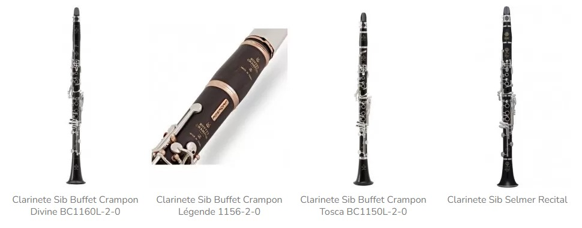
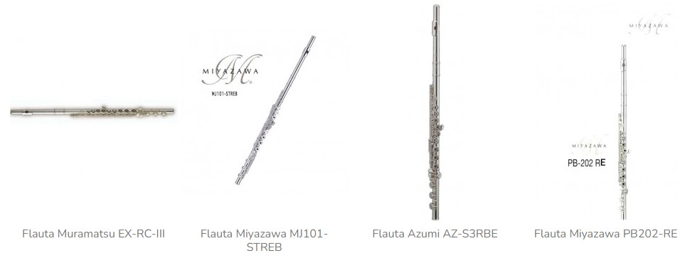
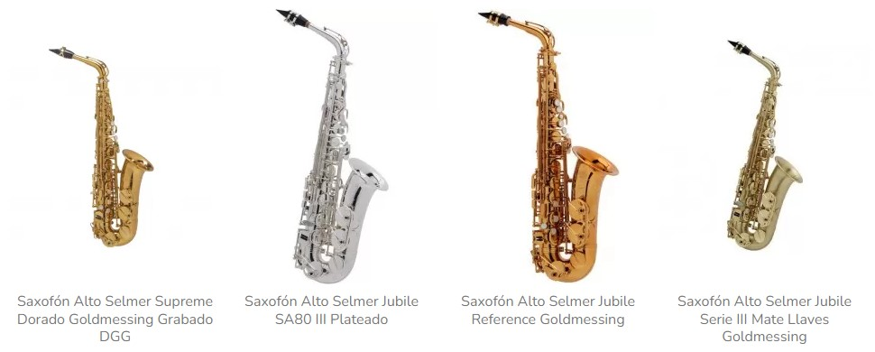

Los instrumentos de viento son aquellos que producen sonido al hacer vibrar una columna de aire en su interior. Se clasifican como aerófonos y se utilizan en diversos géneros musicales, como el jazz, la música clásica y las bandas de viento.
Algunos ejemplos de instrumentos de viento son: Armónicas, Flautas, Clarinetes, Saxofones, Trompetas, Cornetas y cornetines, Bombardinos, Fliscornos, Trombones, Trompas. Los instrumentos de viento se pueden clasificar según la forma de sus tubos, que pueden ser cónicos, cilíndricos o prismáticos: Cónicos: saxofón, fagot, fiscorno, tuba, oboe Cilíndricos: flauta travesera, clarinete, flauta dulce Prismáticos: instrumentos primitivos y algunos tubos de órgano.
Los instrumentos de viento de madera se caracterizan por producir un amplio espectro de timbres, desde el suave y melodioso del clarinete hasta el brillante y estridente del flautín.
Si nos pusiéramos a hablar de instrumentos tardaríamos semanas o meses en mencionar cada uno de ellos pero, sin duda, sería una charla muy entretenida. Es por eso que en este post te hablaremos de 22 tipos de instrumentos de viento y sobre por qué se clasifican como lo hacen.
A grandes rasgos, existen dos tipos de instrumentos de viento: los de madera y los de metal. Aunque se dividen de este modo, parten del mismo concepto: producen sonido a partir de la vibración de la columna de aire en su interior.
Veamos cuáles son los integrantes de una de las familias más apasionantes de la música.
En estos instrumentos la vibración del aire tiene su origen en el cuerpo del instrumento mismo, no en los labios del intérprete. Es por eso que mientras más largo sea el tubo del instrumento, la altura de las notas emitidas serán mayores.
El fagot funciona a través de la vibración de una lengüeta doble. Fue creado en el siglo XVIII y tiene una longitud de 155 centímetros. Poseedor de un registro de hasta tres octavas y media, el fagot es un integrante oficial de las orquestas sinfónicas, siendo adoptado también en otros géneros musicales como el jazz, el rock y el flamenco. A lo largo de su historia ha intervenido en las grandes corrientes musicales, como el barroco, el clasicismo y el romanticismo.
Actualmente existen dos tipos de sistemas para el fagot: el alemán (tocado en casi todo el mundo) y el francés (muy utilizado en Francia, claro). Al ser un instrumento pesado, generalmente el intérprete debe tocarlo sentado, sujetando el fagot con una correa o un arnés y colocándolo hacia su lado derecho.
Este instrumento tal vez es tan antiguo como la raza humana, pues se han encontrado flautas prehistóricas en casi todas las culturas alrededor del mundo. Realmente se trata de un instrumento de fácil construcción, pues es un tubo con orificios y una boquilla en uno de sus extremos.
Podemos encontrar varios tipos de flautas, destacando como las más populares las flautas travesera y la dulce.
Es uno de los instrumentos más conocidos a nivel mundial. El saxofón produce el sonido gracias a la caña sujetada a la boquilla. Creado por Adolphe Sax, este instrumento es un tubo largo y curvo que termina en una forma de campana, que a través de llaves “juega” con el aire dentro de él, produciendo diferentes notas. Existen varios tipos de saxofones, entre los que destacan: soprano, alto, tenor y barítono.
El oboe emite sonido gracias a la vibración de una lengüeta doble que conduce la columna de aire. Su sonido se caracteriza por su dulzura. Este instrumento ha llegado a nuestros tiempos después de un largo proceso de evolución en diferentes culturas y épocas. Es miembro de orquestas, bandas, música de concierto, de cámara, participando en repertorio clásico, barroco y contemporáneo.
En la actualidad es utilizado en géneros como el pop, el rock, jazz y en la música cinematográfica, donde posee un gran protagonismo.
Presenta una boquilla con una caña simple. Es integrante oficial de la orquesta sinfónica, acompañando a sus primos en la sección de las maderas. El clarinete es un instrumento poseedor de un hermoso timbre, motivo por el que muchas veces participa como solista en diversas presentaciones. Realmente es un instrumento muy versátil capaz de ejecutar más de cuatro
  Los instrumentos de percusión son aquellos que producen sonido al ser golpeados o sacudidos. Son esenciales para marcar el ritmo en la música y aportan una gran variedad de texturas y colores sonoros.
Los instrumentos de percusión se clasifican principalmente en dos grandes grupos:
Los instrumentos de percusión cumplen diversas funciones en la música:
Existen una gran variedad de instrumentos de percusión en todo el mundo. Algunos ejemplos comunes son:
Los instrumentos idiófonos son un tipo de instrumento musical de percusión que produce sonido principalmente a través de la vibración de su propio cuerpo, sin necesidad de cuerdas, membranas o columnas de aire. El término "idiófono" proviene del griego, donde "idio" significa propio y "phonos" significa sonido2.